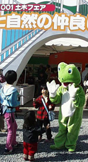
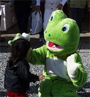
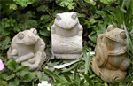
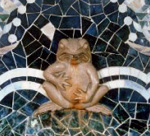
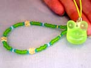

|
 土木フェアにカエル出現！ 【佐賀発=しげやん同志記者】１１月４日にアジア最大の熱気球大会、「佐賀インターナショナルバルーンフェスタ」に行ってきました。嘉瀬川の河川敷がメイン会場とあって、管理する国土交通省もイベントテント「人と自然の仲良しフェア」を設営していたのですが、なんと、呼び込みをカエル様が担当しているではありませんか。笑顔いっぱいに子どもらが駆け寄る姿に、カエル様の人徳の深さを改めて感じ入りました。カエル様といっしょに記念写真を撮る子どもたちのうれしそうなこと。カメラを構える大人たちも自然と笑顔を浮かべていました。構造改革の矢面に立たされ、なにかと悪者イメージが強くなってきた国交省では、カエル様がイメージ回復の救世主と期待されているとかいないとか。
土木フェアに続きカエル空港建設を！【全国かえる奉賛会】カエルがいると人々も笑顔で集まってくるので、集客力がちがうぞー。福岡空港まで電車で１時間でいけるのに、わざわざド田舎に空港を作って、乗客を集めるのに苦労している、某佐賀空港は、地上勤務者も空中小姐もカエルのきぐるみを着たらいいのであるーっ。北九州空港とか、長崎空港とかも同じだああ。九州ってバス停なみに空港あるんだけど。成田と羽田しかない関東地区の人々はぶったまげるだろうなー。大半は赤字なんだけど。バリ島発カエルの石彫り！ 【インドネシア・バリ島発インドネシア・バリ島で、石屋をやっているwayanhappy同志記者】ウチの店の今月のプレゼント商品が、「カエルの石彫り」なんです。今後も店には積極的にカエルの石を並べるつもりです。当店のウリは、
12月にカエル、カメ、サカナが新しくUPする予定です。1月には、現在制作中なんですが、ちょっと大きめのカエルが入荷します。バリからの入荷は遅いんですよー。
【全国かえる奉賛会】ガーデニングに不可欠なカエル置き物として、急激に人気が出たのであろう。しまもカエル聖地のバリで製造されたカエル。これは人気が出るだろねーっ！増産につぐ増産で、精算ライン全部をカエルに切り替えるように願っているぞおおおーっ。かえる新聞での紹介が出る前に売り切れになってしまったああ。すごい人気です。
首相官邸に壁面カエル！ 【東京発けろむら同志記者】全国１４０万人もの人が取っている（らしい）小泉内閣のメールマガジンにこんな記事が載っていました。メルマガ取っている人は，ちゃんと読んでるのだろう か。わたしは「カエル」という単語に反応して，ここだけ読みました。
【全国かえる奉賛会】カエル掲示板にけろすけ同志も書き込んみしていた、首相官邸のカエル！いったい誰がカエルを壁面に埋め込んだのか謎ですけど、昔の建築の装飾には、必ず意味があるということなので、何か意味があるはずですねー。この首相官邸は、新しいのができるので、その後どうなるのかわかんないけど、創建当時と同じように、カエルの口から水を流してほしいなーっ！！
モローストラップ８期残数わずか！ 【ケロ天市場】けろテン市場では、モローのストラップ『第８期分譲開始』だああああ！！題して『夏の思い出コレクション』。今回、大王がケロ天のページ作った直後に、上海旅行にでかけてしまい、ケロ天市場の広報を新聞でするのが遅れたあああ。ページにたまたま辿り着いたラッキーな人は、先にゲットしているけど、まだ今からでも遅くないぞーっ！！モローストラップ作者の『弟子りょーこさん』のミニグラビア付きです。注文はお早めに！
一般紙も三朝温泉カエルを報道！【千葉発なら しのこ同志記者】2001/11/01の読売新聞夕刊に三朝（みささ）温泉の記事が載っていました。記事には湯の町ギャラリーにカエル人形館があることと、恋谷橋にあるかじか蛙の焼き物の写真がありました。
【全国かえる奉賛会】このところ、非カエル系マスコミがカエルネタを報道することが増えてきた。カエルはニュースになるってことを、かえる新聞におくれること５年で、ようやく知って来たということなんであるーっ！！カエル新聞平成１１年3月14日号でも話題になった三朝温泉の近況をしることができるぞーっ！！
投稿採用者に武功カエル徽章を授与！ |
||||||||||||||||||||||||||||||

かえる古新聞過去に取り上げた記事を見出し付きで一覧したい人は、ここをクリック◆創刊号を見る◆先週号を見る◆話題の号を見る◆かえる新聞の昔を読む◆COOL NET FROG RANKING !
 ホームページ大王の投票場所
ホームページ大王の投票場所
|
私も入っています。。全国かえる奉賛会
大王様に会うには、このバナーをクリック。ずっと奥に写真館があるぞ。全国かえる奉賛会に入会するには、自分のホームページのどこかに、下の部分を追加するとバナーがリンク付きで表示されるぞ。どんどん入会しましょー |


|